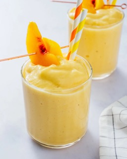

Mango-Peach Smoothie

You can use fresh or frozen fruit in this yummy mango and peach smoothie. It tastes better if the fruit is frozen, so I freeze fresh fruit for this.
Ingredients
- 1 peach, sliced
- 1 mango, peeled and diced
- 1/2 cup vanilla soy milk
- 1/2 cup orange juice, or as needed
Directions
- Place peach, mango, soy milk, and orange juice into a blender. Cover, and puree until smooth. Pour into glasses to serve.